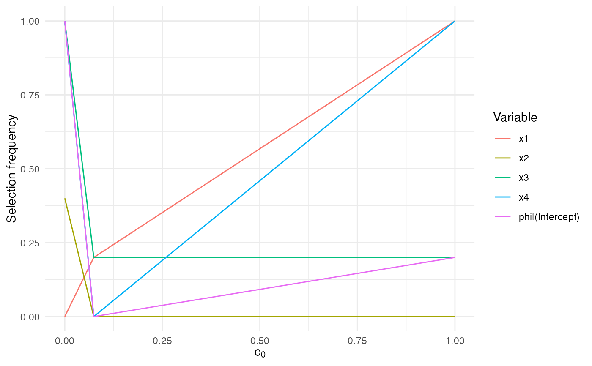

These S3 helpers make it easier to inspect and visualise the
correlation-threshold grid returned by sb_beta(). They surface the stored
attributes, reshape the selection frequencies into tidy summaries, and produce
quick ggplot2 visualisations for interactive use.
Value
summary.sb_beta() returns an object of class summary.sb_beta
containing a tidy data frame of selection frequencies. The plotting and
printing methods are invoked for their side effects and return the input
object invisibly.
Examples
set.seed(42)
sim <- simulation_DATA.beta(n = 50, p = 4, s = 2)
fit <- sb_beta(sim$X, sim$Y, B = 5, step.num = 0.5)
print(fit)
#> SelectBoost beta selection frequencies
#> Selector: betareg_step_aic
#> Resamples per threshold: 5
#> Interval mode: none
#> c0 grid: 1.000, 0.074, 0.000
#> Inner thresholds: 0.074
#> x1 x2 x3 x4 phi|(Intercept)
#> c0 = 1.000 1.0 1.0 0.0 0.0 1
#> c0 = 0.074 0.0 0.2 0.2 0.0 1
#> c0 = 0.000 0.2 0.2 0.0 0.4 1
#> attr(,"c0.seq")
#> [1] 1.00000000 0.07429122 0.00000000
#> attr(,"steps.seq")
#> [1] 0.07429122
#> attr(,"B")
#> [1] 5
#> attr(,"selector")
#> [1] "betareg_step_aic"
#> attr(,"resample_diagnostics")
#> attr(,"resample_diagnostics")$`c0 = 1.000`
#> [1] group size regenerated
#> [4] cached mean_abs_corr_orig mean_abs_corr_surrogate
#> [7] mean_abs_corr_cross
#> <0 rows> (or 0-length row.names)
#>
#> attr(,"resample_diagnostics")$`c0 = 0.074`
#> group size regenerated cached mean_abs_corr_orig
#> 1 x1,x2,x3,x4 4 5 FALSE 0.09585409
#> 2 x1,x2,x4 3 5 FALSE 0.14389949
#> 3 x1,x3 2 5 FALSE 0.10433716
#> mean_abs_corr_surrogate mean_abs_corr_cross
#> 1 0.14830127 0.13174777
#> 2 0.13704850 0.10256011
#> 3 0.08700178 0.08715174
#>
#> attr(,"resample_diagnostics")$`c0 = 0.000`
#> group size regenerated cached mean_abs_corr_orig
#> 1 x1,x2,x3,x4 4 0 TRUE 0.09585409
#> mean_abs_corr_surrogate mean_abs_corr_cross
#> 1 0.1483013 0.1317478
#>
#> attr(,"interval")
#> [1] "none"
summary(fit)
#> SelectBoost beta summary
#> Selector: betareg_step_aic
#> Resamples per threshold: 5
#> Interval mode: none
#> c0 grid: 1.000, 0.074, 0.000
#> Inner thresholds: 0.074
#> Top rows:
#> c0 variable frequency
#> 1 1.0000 x1 1.0
#> 2 1.0000 x2 0.0
#> 3 1.0000 x3 0.2
#> 4 1.0000 x4 1.0
#> 5 1.0000 phi|(Intercept) 0.2
#> 6 0.0743 x1 0.2
#> 7 0.0743 x2 0.0
#> 8 0.0743 x3 0.2
#> 9 0.0743 x4 0.0
#> 10 0.0743 phi|(Intercept) 0.0
if (requireNamespace("ggplot2", quietly = TRUE)) {
autoplot.sb_beta(fit)
}
